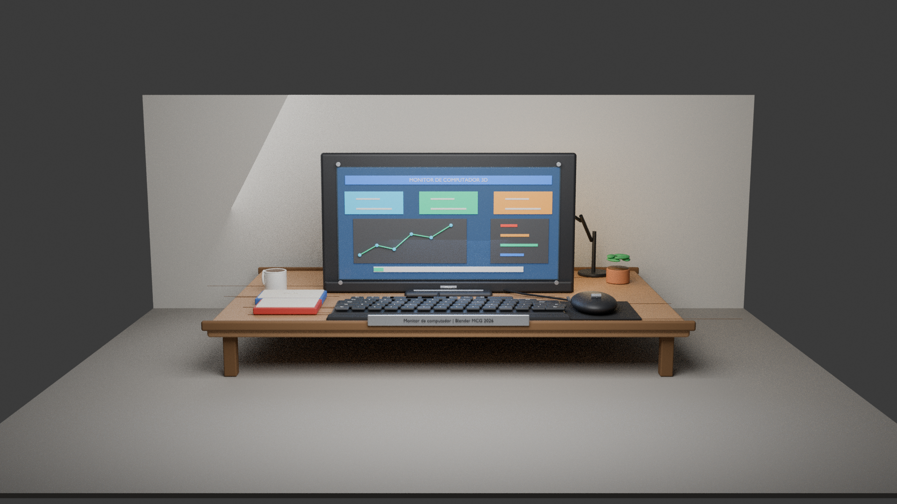

Portfólio Académico
Percurso em Informática
Composição digital
Olá, eu sou
Tecnologia, composição visual e aprendizagem em progresso.
Estudante de Informática focado em programação, raciocínio lógico e criação digital, com interesse por projectos práticos bem apresentados.
Sobre
Perfil pessoal
Percurso, motivação e áreas que continuam a estruturar a evolução técnica e criativa de Elton.
Informática, composição digital e evolução constante.
Sou Elton Azevedo Monjane, estudante de Informática com interesse especial por programação, multimédia e tecnologias de informação. Procuro consolidar bases técnicas e aplicar conhecimento em projectos práticos com organização, clareza e atenção à apresentação.
Programação
Multimédia
Tecnologias de Informação
Estudante de Informática
Percurso académico orientado para consolidar fundamentos técnicos com visão prática e progressão consistente.
Foco em aprendizagem
Desenvolvimento contínuo através de prática, estudo e construção gradual de competências.
Interesse por tecnologia
Curiosidade activa por ferramentas, conceitos e soluções digitais ligadas à informática.
Projectos digitais
Aplicação de conhecimentos em trabalhos visuais e interactivos com cuidado na apresentação final.
Competências
Competências em desenvolvimento
Áreas que estruturam o percurso actual de Elton, com leitura directa e progressão visual clara.
Fundação técnica
Java
Desenvolvimento de sintaxe, estruturas de controlo e pequenos programas com foco em clareza, prática e consistência.
Base técnica
Programação básica
Fundamentos de lógica, estruturação de código e resolução de exercícios com organização, sequência e boa legibilidade.
Análise
Raciocínio lógico
Capacidade de interpretar problemas e organizar etapas consistentes para chegar a soluções objectivas e bem estruturadas.
Constante
Aprendizagem contínua
Compromisso com evolução permanente, curiosidade técnica e melhoria progressiva das competências ao longo do percurso.
Criatividade
Multimédia e Computação Gráfica
Interesse por composição visual, modelação, edição e experiências digitais com atenção ao detalhe e apresentação visual.
Académico
Tecnologias de Informação
Contacto com ferramentas, conceitos e práticas fundamentais da área informática no contexto académico e formativo.
Projectos
Projectos seleccionados
Trabalhos ligados a design gráfico, modelação 3D, multimédia e apresentação visual, organizados como peças centrais do portfólio.
Cartaz de Multimédia
Composição gráfica desenvolvida para apresentar conteúdo multimédia com leitura clara, boa hierarquia visual e equilíbrio entre texto e imagem.
Animação 2D
Peça animada em 2D organizada para mostrar ritmo, transições visuais e clareza narrativa numa apresentação curta e directa.
Vídeo de Apresentação
Vídeo principal de apresentação pensado para reunir enquadramento, sequência visual e leitura fluida do conteúdo num formato directo.

Monitor de Computador
Modelagem 3D de um monitor de computador desenvolvida em Blender, com aplicação de materiais, iluminação e enquadramento para apresentação visual.
Monitor 3D Interactivo
Modelo 3D publicado para web com controlo de câmara, rotação automática e enquadramento pensado para destacar forma, materiais e acabamento.
Vídeo do Monitor
Vídeo real de apresentação do monitor, com movimento e enquadramento pensados para mostrar o projecto de forma directa e legível.
Contacto
Vamos conversar sobre tecnologia e projectos
Para colaboração, aprendizagem ou oportunidades, usa o formulário ou segue directamente para o WhatsApp.
Abrir WhatsApp